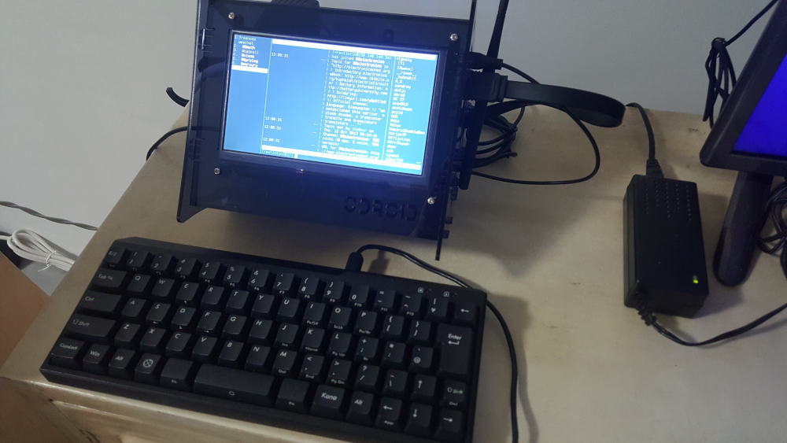
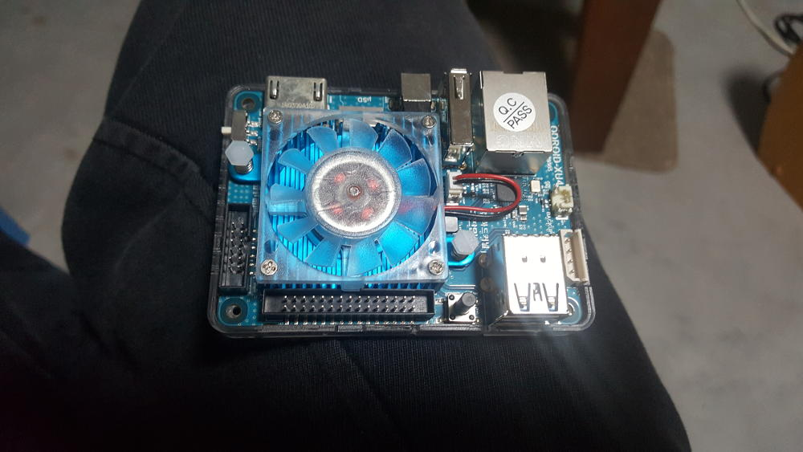
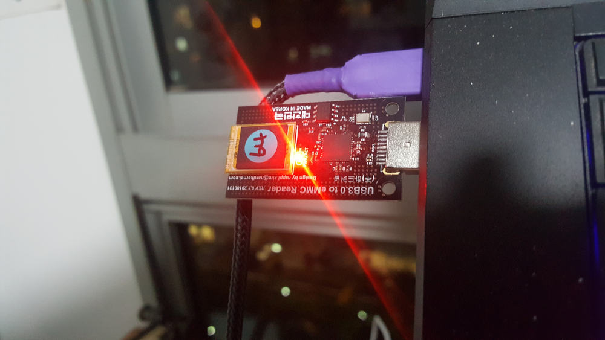
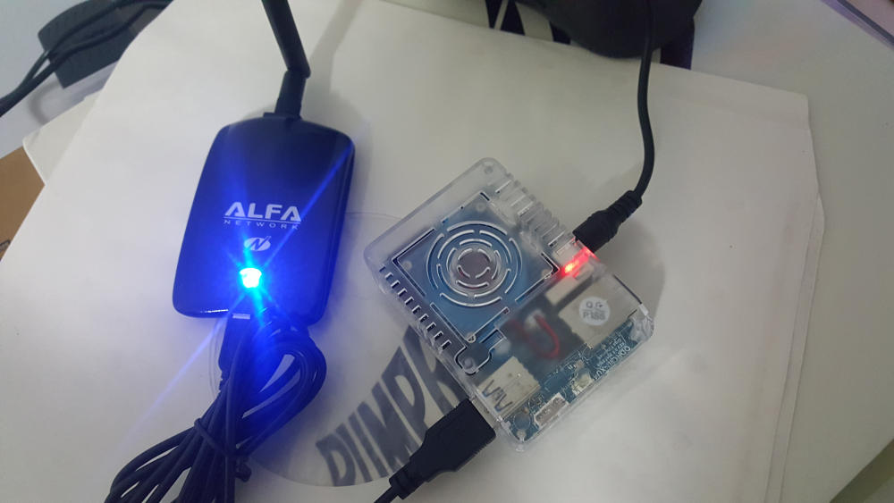

Update:
I got a VU7 and an accompanying shell (saved a fair bit on shipping piggybacking on Commons' regular pop shipments :D) and I'm pretty happy with the end result - a cute little extra desktop for surfing/IRCing/reading when I'm in the living room!

After setting up a Raspberry Pi as a streaming source for my analog audio system, and seeing the Odroid HC1 perform well as a CDN for Commons.host, I started thinking about getting another SBC that would run Kali for playing CTF. The Odroid XU4 looked like it would handle the job well with a nice 2GB RAM and octa core CPUs - at a tiny $59.

Flashing Kali on was straightforward, though handling an eMMC for the first time I felt I had to be extra gentle with all the tiny little pins. After that it was simply snap in, close the case and screw it tight.

Some might point out that the lack of a WiFi module makes the Pi a better option, but in this case it wasn't a big deal - I had an Alfa WiFi adapter lying around so I could put the box anywhere in the house that was convenient.

So far it's working without any hitches, so props to the folks at HardKernel for making computing affordable and Offensive Security for maintaining a XU-3/4 friendly version of Kali. I remember when machines were pricey beasts, now it's merely $100 to get a working setup - we live in good times.
I love it that I retain the productivity of NixOS on my main machine at home but whenever I want to play script kiddie at CTF challenges I just SSH into the XU4, load up a screen session and go at it! On a side note, did you know dirbuster can be run headless?
$ dirbuster -l /usr/share/dirbuster/wordlists/directory-list-2.3-medium.txt -H -u 'http://10.10.10.91:5000/'
Starting OWASP DirBuster 1.0-RC1 in headless mode
Starting dir/file list based brute forcing
...